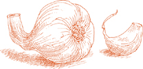

IТАЛЬЯНСКИЕ СУПЫ своим характером обязаны двум элементам: сезону и месту происхождения.
Времена года определяют выбор овощи, бобовые, клубни и травы, которые, за исключением тех немногих рыбных супов, которые представляют собой скорее блюда из морепродуктов, чем настоящие супы, обычно присутствуют заметно либо в качестве акцента, либо в качестве доминирующего ингредиента.
Место формирует стиль. Овощной суп может сказать вам, где вы находитесь в Италии, почти так же точно, как карта. Есть южные супы, приготовленные на основе томатов, чеснока и оливкового масла, часто с макаронами; супы Тосканы и других регионов Центральной Италии, обогащенные фасолью и дополненные толстыми ломтиками хлеба; супы севера с рисом; ароматные Ривьеры, с салатом и свежей зеленью.
Единственная общая черта итальянских супов, единственная отличительная черта — это их сытность. Некоторые могут быть легче других; некоторые могут быть худыми; какой-то толстый. В некоторых супах фасоль или картофель можно измельчить в пищевой мельнице. Однако ни в одном супе текстура, консистенция, вес – физическая идентичность ингредиентов – не стираются полностью. В итальянском репертуаре нет ни супов, ни супов-пюре.
AДОМВ моей родной Романье минестроне готовят именно так. К сезонным овощам добавляем всегда доступные основные продукты — морковь, лук, картофель — и варим их в хорошем бульоне на медленном огне часами. В результате получается суп с плотным, мягким вкусом, который не напоминает ни один овощ в отдельности, а все сразу.
Обратите внимание, что все ингредиенты кладутся в кастрюлю не одновременно, а в той последовательности, которая указана. Сначала обжарив лук, вы получите все необходимое. основной аромат, который затем, в свою очередь, передается другим овощам. Пока готовится один овощ, вы можете очистить и нарезать другой — это более эффективный и менее утомительный метод, чем готовить все овощи одновременно. Если удобнее, вы, конечно, можете заранее подготовить все овощи, но соблюдайте интервалы приготовления, указанные в рецепте.
На 6-8 порций
1 фунт свежих кабачков
½ стакана оливкового масла первого отжима
3 столовые ложки сливочного масла
1 чашка лука, нарезанного очень тонко
1 стакан нарезанной кубиками моркови
1 чашка нарезанного кубиками сельдерея
2 чашки очищенного, нарезанного кубиками картофеля
¼ фунта свежей зеленой фасоли
3 стакана нашинкованной савойской капусты ИЛИ обычная капуста
1½ стакана консервированных каннеллини фасоль сушеная, ИЛИ ¾ стакан сушеной белой фасоли, замоченной и приготовлено по указанию
6 чашек Основной домашний мясной бульон, ИЛИ 2 стакана консервированного говяжьего бульона плюс 4 стакана воды
НЕОБЯЗАТЕЛЬНЫЙ: корочка от куска от 1 до 2 фунтов пармиджано-реджано сыр, тщательно очищенный
⅔ стакана консервированных импортных итальянских помидоров сливы с их соком
Соль
⅓ стакана свеженатертого пармиджано-реджано сыр
1. Замочите кабачки в большой миске, наполненной холодной водой, минимум на 20 минут, затем промойте их от остатков песка. Обрежьте оба конца каждого кабачка и нарежьте кабачки мелкими кубиками.
2. Выберите кастрюлю, в которой удобно поместятся все ингредиенты. Положите растительное, сливочное масло и нарезанный лук и включите средний огонь. Готовьте лук в открытой кастрюле, пока он не завянет и не станет бледно-золотистого цвета, но не темнее.
3. Добавьте нарезанную кубиками морковь и готовьте 2–3 минуты, помешивая один или два раза. Затем добавьте сельдерей и готовьте, время от времени помешивая, 2–3 минуты. Добавьте картофель, повторяя ту же процедуру.
4. Пока готовятся морковь, сельдерей и картофель, замочите зеленую фасоль в холодной воде, промойте, отломите оба конца и нарежьте кубиками.
5. Добавьте в кастрюлю нарезанную кубиками зеленую фасоль, а когда она проварится 2–3 минуты, добавьте кабачки. Продолжайте время от времени помешивать все ингредиенты и еще через несколько минут добавьте нашинкованную капусту. Продолжайте готовить еще 5–6 минут.
6. Добавьте бульон, сырную корочку (по желанию), помидоры с соком и немного соли. Если вы используете консервированный бульон, слегка посолите на этом этапе, а затем попробуйте и исправьте соль. Тщательно перемешайте содержимое кастрюли. Накройте кастрюлю крышкой и уменьшите огонь, отрегулировав его так, чтобы Суп медленно пузырится, готовясь при устойчивом, но нежном кипении.
7. Когда суп будет вариться 2,5 часа, добавьте слитую и приготовленную каннеллини фасоли, хорошо перемешайте и варите еще как минимум 30 минут. При необходимости вы можете в любой момент выключить огонь и возобновить приготовление позже. Варить до тех пор, пока консистенция не станет достаточно плотной. Минестроне никогда не должен быть жидким и водянистым. Если вы обнаружите, что суп стал слишком густым до того, как он закончил готовиться, вы можете немного разбавить его домашним бульоном или, если вы начали с консервированного бульона, водой.
8. Когда суп будет готов, непосредственно перед тем, как выключить огонь, снимите сырную корку, добавьте тертый сыр, затем попробуйте и поправьте на соль.
Предварительное примечание  Минестроне, в отличие от большинства приготовленных овощные заготовки еще лучше, если их разогреть на следующий день. Он хранится до недели в плотно закрытом контейнере в холодильнике.
Минестроне, в отличие от большинства приготовленных овощные заготовки еще лучше, если их разогреть на следующий день. Он хранится до недели в плотно закрытом контейнере в холодильнике.

DУРИНГ Жаркое лето в Милане, траттория первым делом приготовьте этот минестроне утром, разлейте его по отдельным суповым тарелкам и поставьте на стол у входа вместе с другими вероятными деликатесами дня, такими как ассортимент хрустящих овощей на обед. пинцимонио, холодный вареный окунь, пармская ветчина со сладкими дынями или, в конце лета, со спелым, медовым инжиром. К половине двенадцатого или часу дня, когда первые посетители обеда сядут на свои места, минестроне достигнет нужной температуры и консистенции.
Поскольку вкус овощного супа улучшается при разогреве, вам не нужно готовить минестроне полностью с нуля в тот же день, когда вы собираетесь его подавать. Вы можете приготовить суп, составляющий его основу, на день или два раньше и достать его из холодильника, когда будете готовы приступить к работе. Медведь Имейте в виду, что после приготовления холодному минестроне требуется по крайней мере один час времени, чтобы остыть до наиболее желательной температуры подачи.
На 4 порции
2 чашки Овощной суп по-романьски
½ стакана риса, предпочтительно итальянского риса Арборио
Соль
Черный перец, свежемолотый с мельницы
¼ стакана свеженатертого пармиджано-реджано сыр
8–10 свежих листьев базилика, порванных на несколько небольших полосок.
2 столовые ложки оливкового масла первого отжима
1. Положите овощной суп в кастрюлю и 2 стакана воды и доведите до кипения на среднем огне. Добавьте рис, хорошо размешивая деревянной ложкой.
2. Когда суп снова закипит, добавьте соль и несколько молотых перцев. Перемешайте, накройте кастрюлю крышкой и уменьшите огонь до среднего. Время от времени помешивайте. Начните пробовать рис на готовность через 12 минут. Не переваривайте его, потому что он продолжит размягчаться позже, пока суп остывает в тарелке. Когда все будет готово, прежде чем выключить огонь, добавьте тертый сыр, затем попробуйте и поправьте на соль.
3. Разлейте суп по тарелкам или мискам, добавьте порванные листья базилика, хорошо перемешайте и дайте отдохнуть. Подавайте при комнатной температуре, сбрызнув каждую тарелку небольшим количеством оливкового масла.
Примечание Не подавайте суп позднее дня его приготовления и не храните его в холодильнике перед подачей.
В конце шага 2 предыдущего рецепта, когда рис будет готов, добавьте 2 столовые ложки песто. Разливая суп по тарелкам или отдельным тарелкам, не добавляйте свежие листья базилика.
TЕГО ЕСТЬ более легкий и свежий вкус, чем более знакомые версии овощного супа. Он не имеет и не стремится к сложному резонансу вкусов, которого минестроне достигает при длительном приготовлении широкого ассортимента овощей. Это просто сладкая на вкус смесь артишоков и гороха с картофелем, приготовленным с оливковым маслом и чесноком.
На 4-6 порций
1 столовая ложка лимонного сока
1 фунт свежего горошка, неочищенного, ИЛИ ½ упаковки замороженного горошка весом 10 унций, размороженного
⅓ стакана оливкового масла первого отжима
1 столовая ложка чеснока, мелко нарезанного
1 фунт отварного картофеля, очищенного, промытого и нарезанного ломтиками толщиной ¼ дюйма.
Соль
Черный перец, свежемолотый с мельницы
3 столовые ложки петрушки, очень мелко нарезанной
НЕОБЯЗАТЕЛЬНЫЙ: 1 ломтик на порцию поджаренного хрустящего хлеба, слегка натертого чесноком
1. Очистите артишоки от жестких листьев и верхушек. Разрежьте их вдоль пополам и удалите сердцевины и колючие внутренние листья.
2. Нарежьте половинки артишоков вдоль как можно более тонкими ломтиками и положите их в миску, залейте достаточным количеством воды, добавив в воду лимонный сок.
3. Если вы используете свежий горошек, очистите его от шелухи и подготовьте несколько стручков для приготовления. снятие их внутренних мембран. Необязательно использовать все или даже большую часть модулей, но делайте столько, сколько у вас хватит терпения. Чем больше их попадет в кастрюлю, тем слаще будет суп.
4. Поместите оливковое масло и чеснок в суповую кастрюлю, включите средний огонь и обжаривайте чеснок, пока он не приобретет бледно-золотистый цвет. Затем добавьте нарезанный картофель. Уменьшите огонь до среднего, накройте кастрюлю крышкой и варите около 10 минут.
5. Если вы используете размороженный замороженный горошек, отложите его на потом и перейдите к шагу 6 ниже. Если вы используете свежий горошек, действуйте следующим образом: положите в кастрюлю горох и очищенные стручки, перемешивайте в течение 3–4 минут, чтобы они покрылись слоем, и добавьте достаточно воды, чтобы покрыть их. Накройте кастрюлю крышкой, уменьшите огонь до среднего и варите 20 минут.
6. Слейте воду с ломтиков артишока, смыв подкисленную воду. Положите их в кастрюлю с солью и небольшим количеством перца. Готовьте артишоки в открытой кастрюле 3–4 минуты, хорошо помешивая.
7. Добавьте достаточно воды, чтобы она была сверху, накройте кастрюлю и убедитесь, что огонь средний. Готовьте артишоки до тех пор, пока они не станут очень мягкими, если их протыкать вилкой, около 30 минут, в зависимости от их свежести и молодости.
8. Если вы используете замороженный горошек, добавьте его сейчас и готовьте еще 10 минут.
9. Прежде чем выключить огонь, добавьте петрушку и перемешайте один или два раза. Разлейте суп на отдельные тарелки поверх дополнительного ломтика хлеба. Подавайте срочно.
Предварительное примечание Суп можно приготовить на шаге 8 за несколько часов заранее. Слегка разогрейте и завершите, как описано в шаге 9.
На 5 или 6 порций
2 фунта свежего шпината ИЛИ 2 упаковки по десять унций замороженного цельнолистового шпината, размороженного
Соль
4 столовые ложки (½ палочки) сливочного масла
2 столовые ложки нарезанного лука
2 чашки Основной домашний мясной бульон, ИЛИ 1 стакан консервированного говяжьего бульона, разбавленного 1 стаканом воды
2 стакана молока
Целый мускатный орех
5 столовых ложек свеженатёртого пармиджано-реджано сыр
1. Если вы используете свежий шпинат: Выбросьте все увядшие, поврежденные листья и обрежьте все стебли. Подержите несколько минут в тазу или раковине, наполненной холодной водой, слейте воду и снова наполните таз или раковину свежей холодной водой, повторяя всю процедуру несколько раз, пока в воде не исчезнут следы почвы.
2. Положите шпинат в кастрюлю, в которой должно быть столько воды, сколько осталось на его листьях. Добавьте 1 столовую ложку соли, накройте кастрюлю, включите средний огонь и готовьте до готовности, около 5 минут или меньше, в зависимости от свежести и молодости шпината.
3. Слейте воду со шпината и, как только он остынет, аккуратно сожмите его, чтобы он потерял большую часть влаги, и нарежьте его довольно крупно.
Если вы используете замороженный шпинат: Когда он оттает, отожмите из него влагу и крупно нарежьте.
4. Положите масло и лук в суповую кастрюлю и включите средний огонь. Обжарьте лук, пока он не станет бледно-золотистого цвета. Добавьте приготовленный свежий или размороженный шпинат и обжарьте в открытой кастрюле 2–3 минуты, помешивая, чтобы он хорошо покрылся.
5. Добавьте бульон, молоко и крошечную терку (не более ⅛ чайной ложки) мускатного ореха и доведите до кипения, время от времени помешивая.
6. Добавьте в суп тертый пармезан, тщательно размешивая, попробуйте на соль и выключите огонь.
7. Разлейте по тарелкам или мискам и подавайте. кростини на стороне.
Кростини — это простой в приготовлении итальянский эквивалент гренок, очень вкусный во многих супы, особенно если вам удастся приготовить их незадолго до того, как вы собираетесь подать суп на стол.
На 4 порции
4 ломтика белого хлеба хорошего качества
Растительное масло, достаточно
½ дюйма вверх по краю кастрюли
1. Срежьте с ломтиков хлеба корку и нарежьте их квадратами размером ½ дюйма.
2. Налейте масло в сковороду среднего размера и включите средний огонь. Масло должно стать достаточно горячим, чтобы хлеб зашипел, когда его вложат. Когда вы решите, что он готов, проверьте его одним квадратом. Если он шипит, положите столько кусков хлеба, сколько поместится, не перегружая форму. Не имеет значения, войдут ли они все одновременно, потому что вы можете сделать две или более порций. Уменьшите огонь, потому что хлеб быстро подгорит, если масло станет слишком горячим. Перемещайте квадраты по сковороде длинной ложкой или лопаткой, и как только они приобретут светло-золотистый цвет, удалите их шумовкой или лопаткой и поместите на бумажные полотенца или проволочную решетку для охлаждения, чтобы удалить излишки масла.
Если вы готовите более одной партии, при необходимости отрегулируйте температуру, чтобы хлеб не подгорел. Однако масло должно быть достаточно горячим, чтобы квадраты подрумянились легко и быстро.
Предварительное примечание Кростини они лучше всего готовятся непосредственно перед подачей на стол. Однако их можно приготовить за несколько часов заранее и хранить при комнатной температуре. Не оставляйте на ночь, потому что они могут приобрести несвежий, прогорклый вкус.
TОН ИНГРЕДИЕНТЫ В любом из этих супов их так мало, что их нужно тщательно выбирать, чтобы придать приятный вкус, на который они способны. Хотя из соображений практичности даны альтернативы домашнему мясному бульону, есть надежда, что вы проигнорируете их, вместо этого полагаясь на запас хорошего замороженного бульона, который вы стараетесь всегда иметь под рукой.
На 4-6 порций
1 головка эскарола ИЛИ 1 фунт свежего шпината
Соль
4 столовые ложки (½ палочки) сливочного масла
2 столовые ложки нарезанного лука
3½ чашки Основной домашний мясной бульон, ИЛИ 1 стакан консервированного говяжьего бульона, разбавленный 2½ стаканами воды ИЛИ 2 бульонных кубика растворить в 3½ стакана воды.
⅓ стакана риса, предпочтительно итальянского риса Арборио
3 столовые ложки свеженатёртого пармиджано-реджано сыр
1. При использовании эскарола: Отделите все листья от корня и выбросьте все помятые, увядшие или обесцвеченные листья. Остальные замочите в нескольких обильных сменах холодной воды, пока полностью не очиститесь от почвы. Слейте воду и нарежьте полосками шириной около ½ дюйма. Отложите в сторону.
Если вы используете шпинат: Если листья шпината все еще прикреплены к корню, отрежьте их и выбросьте, разделив каждую гроздь на отдельные листья. Не обрезайте стебли, потому что в этот суп идут и листья, и стебли. Замочите шпинат в нескольких сменах холодной воды..
Готовьте шпинат в закрытой кастрюле на среднем огне, добавляя щепотку соли, чтобы он оставался зеленым, но не добавляя никакой другой жидкости, кроме воды, прилипшей к его листьям. Когда пролитая вода начнет пузыриться, варите еще примерно 2–3 минуты.
Выкопайте шпинат дуршлагом или большой шумовкой. Не выливайте жидкость, оставшуюся в кастрюле. Как только шпинат достаточно остынет, осторожно сожмите его, позволяя всей выделившейся жидкости стечь обратно в кастрюлю. Отложите шпинат в сторону, оставив жидкость.
2. Положите сливочное масло и нарезанный лук в большую сковороду и включите средний огонь. Обжарьте лук, пока он не станет светло-золотистого цвета, затем добавьте эскарол или шпинат.
При использовании эскарола: Добавьте щепотку соли, чтобы сохранить цвет, перемешайте 2–3 раза, чтобы она полностью покрылась слоем, затем добавьте ½ стакана бульона, убавьте огонь до минимума и накройте кастрюлю крышкой. Готовьте, пока эскарол не станет мягким, примерно 25–45 минут, в зависимости от свежести и молодости зелени.
Если вы используете шпинат: Обжарьте шпинат на сильном огне с луком и сливочным маслом в течение нескольких минут, помешивая 2–3 раза.
3. Переложите все содержимое кастрюли в суповую кастрюлю, добавьте весь бульон и, если вы использовали шпинат, 1 стакан оставшейся шпинатной жидкости. Накройте кастрюлю крышкой и включите средний огонь. Когда бульон закипит, добавьте рис и снова накройте кастрюлю. Отрегулируйте огонь так, чтобы рис варился при устойчивом медленном кипении, время от времени помешивая, пока рис не будет готов. В примерно 20–25 минут, он должен быть твердым на укусе, но нежным, не меловым внутри.
4. Когда рис готов, добавьте тертый пармезан, попробуйте и поправьте на соль. Подавайте немедленно.
Примечание The последовательность суп должен быть густым, но достаточно жидким на ложке. Если во время приготовления риса вы обнаружите, что он стал слишком густым, добавьте половник воды или шпинатной жидкости, если таковая имеется. Но старайтесь не разбавлять суп слишком сильно.
Предварительное примечание OКак только рис окажется в супе, его нужно сразу же съесть и подавать, иначе рис станет мягким. Если вам необходимо приготовить его заранее, остановитесь в конце шага 2 и возобновите приготовление, когда будете готовы к подаче. Приступайте к приготовлению супа в тот же день, когда планируете его съесть, и не храните его в холодильнике.
Чтобы получить альтернативную версию того же супа, которая придаст ему более землистый вкус, замените сливочное масло 3 столовыми ложками оливкового масла первого холодного отжима и 2 чайными ложками измельченного чеснока вместо лука. Хотя сыр пармезан по-прежнему является хорошим выбором для завершающего штриха, вместо него вы можете сделать следующее: после того, как суп будет готов и разлит по тарелкам, сбрызните каждую тарелку небольшим количеством свежего оливкового масла и посыпьте несколькими молотыми черными перцами.
ON AПРИЛ 25 февраля, в то время как вся Италия празднует день освобождения страны от фашистского и немецкого правления, Венеция празднует свой самый драгоценный день – день рождения святого Марка, покровителя республики, просуществовавшей 1000 лет. Раньше по традиции в честь апостола 25 апреля можно было впервые попробовать блюдо, которое на остаток весны стало фаворитом венецианского стола. Риси и Бизи, рис и горох.
В списке ингредиентов не предлагается никакой альтернативы свежему гороху, поскольку главное качество этого блюда заключается в вкусе, которым обладает только хороший свежий горошек. Чтобы вкус горошка был еще слаще, многие итальянские семьи добавляют стручки в кастрюлю. Если вы будете следовать приведенным ниже инструкциям, описывающим, как подготовить стручки к приготовлению, вы освоите технику, которая пригодится во многих других рецептах, в которых требуется горох. Еще один важный компонент вкуса. из Риси и Бизи — это домашний бульон, которому нельзя порекомендовать удовлетворительную замену.
Риси и бизи не ризотто с горошком. Это суп, хотя и очень густой. Некоторые повара делают его достаточно густым, чтобы его можно было есть вилкой, но лучше всего он получается, когда он достаточно жидкий, чтобы можно было использовать ложку.
На 4 порции
2 фунта свежего молодого горошка вместе со стручками.
4 столовые ложки (½ палочки) сливочного масла
2 столовые ложки нарезанного лука
Соль
3½ чашки Основной домашний мясной бульон
1 чашка Итальянский рис
2 столовые ложки измельченной петрушки
½ стакана свеженатёртого пармиджано-реджано сыр
1. Очистите горох. Оставьте 1 чашку пустых стручков, выбрав самые хрустящие и неповрежденные, а остальные выбросьте.
2. Отделите две половинки каждого стручка. Возьмите половину стручка, повернув блестящую внутреннюю вогнутую сторону, которой держали горошины, к себе. Эта сторона покрыта прочной, похожей на пленку мембраной, которую вам придется снять. Держите капсулу одной рукой, а другой защелкните один конец, осторожно потянув его вниз к самой капсуле. Вы обнаружите, что тонкая мембрана отходит без сопротивления. Поскольку он такой тонкий, он, скорее всего, сломается, прежде чем вы его полностью отсоедините. Не беспокойтесь по этому поводу: сохраните очищенную часть стручка, отломите другой конец стручка и попытайтесь удалить оставшуюся часть мембраны. Отрежьте и выбросьте те части стручка, с которых не удалось полностью снять кожуру. Не обязательно получать идеальные целые стручки, поскольку они все равно растворятся в процессе приготовления. Любой кусок без кожицы подойдет для подслащивания супа. Добавьте все подготовленные кусочки стручков к очищенному гороху, замочите в холодной воде, слейте воду и отставьте в сторону.
3. Положите масло и лук в суповую кастрюлю и включите средний огонь. Обжарьте лук до тех пор, пока он не станет бледно-золотистого цвета, затем добавьте горох и очищенные стручки, а также добрую щепотку соли, чтобы горох оставался зеленым. Готовьте 2–3 минуты, помешивая, чтобы горох хорошо покрылся.
4. Добавьте 3 стакана бульона, накройте кастрюлю крышкой и отрегулируйте огонь так, чтобы бульон пузырился при медленном, осторожном кипении в течение 10 минут.
5. Добавьте рис и оставшиеся ½ стакана бульона, перемешайте, снова накройте кастрюлю и варите при постоянном умеренном кипении, пока рис не станет мягким, но твердым на вкус, около 20 минут. Время от времени помешивайте, пока суп варится.
6. Когда рис будет готов, добавьте петрушку, затем тертый пармезан. Попробуйте и поправьте на соль, затем выключите огонь.
GООД ОСТАТКИ готовят хорошие супы, а этот использует Тушеная капуста по-венециански. Однако это слишком вкусный суп, чтобы ждать, пока останется достаточно капусты, поэтому рецепт, приведенный ниже, основан на предположении, что вы начнете с нуля.
Нравиться Риси и Бизи, венецианский суп из риса и гороха, который предшествует этому рецепту, довольно густой, но это не совсем ризотто. Оно должно быть достаточно жидким, чтобы его можно было использовать ложкой.
На 4-6 порций
Тушеная капуста (Его можно приготовить за 2-3 дня заранее.)
3 чашки Основной домашний мясной бульон, ИЛИ 1 стакан консервированного говяжьего бульона, разбавленный 2 стаканами воды ИЛИ 1½ бульонных кубика растворить в 3 стаканах теплой воды.
⅔ стакана риса, предпочтительно итальянского риса Арборио
2 столовые ложки сливочного масла
⅓ стакана свеженатертого пармиджано-реджано сыр
Соль
Черный перец, свежемолотый с мельницы
1. Положите капусту и бульон в суповую кастрюлю и включите средний огонь.
2. Когда бульон закипит, добавьте рис. Готовьте без крышки, регулируя огонь так, чтобы суп пузырился при медленном, но устойчивом кипении, время от времени помешивая, пока рис не будет готов. Он должен быть нежным, но твердым на укус, и это займет около 20 минут. Если во время варки риса вы обнаружите, что суп стал слишком густым, разбавьте его половником домашнего бульона. Если вы не используете домашний бульон, просто добавьте воды. Помните, что в готовом виде суп должен получиться довольно густым.
3. Когда рис будет готов, прежде чем выключить огонь, добавьте сливочное масло и тертый пармезан, тщательно перемешивая. Попробуйте и поправьте на соль, добавьте несколько щепоток черного перца. Разлейте суп по тарелкам и дайте ему настояться всего за несколько минут до подачи.
WКУРИЦА I СТАЛ жена и, по необходимости, повар, это было одно из первых блюд, которые я научился готовить. Прошли десятилетия, в течение которых я приложил руку к бесчисленным десяткам других супов, но я все еще обращаюсь к этому. минестрина— маленький суп — за его очарование, восхитительный контраст текстур, его бесхитростную доброту, его неизменную способность нравиться.
На 4-6 порций
1½ фунта картофеля
2 столовые ложки сливочного масла
3 столовые ложки растительного масла
3 столовые ложки мелко нарезанного лука
3 столовые ложки мелко нарезанной моркови
3 столовые ложки сельдерея, мелко нарезанного
5 столовых ложек свеженатёртого пармиджано-реджано сыр плюс дополнительный сыр на столе
1 стакан молока
2 чашки Основной домашний мясной бульон, ИЛИ ½ стакан консервированного говяжьего бульона, разбавленный 1 ½ стакана воды
Соль
2 столовые ложки измельченной петрушки
1. Картофель очистите, промойте в холодной воде и нарежьте небольшими кусочками. Положите их в суповую кастрюлю с достаточным количеством холодной воды, чтобы покрыть ее, накройте кастрюлю крышкой и включите средний огонь. Отварите картофель, пока он не станет мягким, затем протрите его вместе с жидкостью через большие отверстия пищевой мельницы обратно в кастрюлю. Отложите в сторону.
2. Положите сливочное масло, масло и нарезанный лук в сковороду и включите средний огонь. Обжарьте лук, пока он не станет бледно-золотистого цвета. Добавьте нарезанную морковь и сельдерей и готовьте около 2 минут, помешивая, чтобы овощи хорошо покрылись ими. Не готовьте их достаточно долго, чтобы они стали мягкими, потому что вы хотите, чтобы они были заметно хрустящими в супе.
3. Переложите все содержимое сковороды в кастрюлю с картофелем. Включите средний огонь и добавьте тертый пармезан, молоко и бульон. Перемешайте и варите при постоянном кипении несколько минут, пока кулинарный жир, плавающий на поверхности, не распределится по всему супу. Не допускайте, чтобы суп стал по консистенции гуще сливок. Если это произойдет, разбавьте его равными частями бульона и молока. Попробуйте и поправьте на соль. Выключить огонь, вихрь нарезанной петрушки, затем разложите по отдельным тарелкам или мискам. Подавайте со свежим тертым пармезаном и кростини на стороне.
На 6 порций
2 фунта отварного картофеля
3 столовые ложки сливочного масла
3 столовые ложки растительного масла
1,5 фунта лука, нарезанного очень тонкими ломтиками
Соль
3½ чашки Основной домашний мясной бульон, ИЛИ ½ стакан консервированного говяжьего бульона, разбавленного 3 стаканами воды
3 столовые ложки свеженатёртого пармиджано-реджано сыр плюс дополнительный сыр на столе
1 столовая ложка измельченной петрушки
1. Очистите картофель, нарежьте его кубиками размером ½ дюйма, промойте холодной водой и отложите в сторону.
2. Положите сливочное масло, весь нарезанный лук и щепотку соли в суповую кастрюлю и включите средний огонь. Не накрывайте кастрюлю. Готовьте лук на медленном огне, время от времени помешивая, пока он не завянет и не приобретет бледно-коричневый цвет.
3. Добавьте нарезанный кубиками картофель, увеличьте огонь до сильного и быстро обжарьте картофель, переворачивая его с луком, чтобы он хорошо покрылся.
4. Добавьте бульон, накройте кастрюлю крышкой и отрегулируйте огонь так, чтобы бульон медленно и равномерно кипел. Когда картофель станет очень мягким, разомните большую часть его, разминая его о стенку кастрюли длинной деревянной ложкой. Тщательно перемешайте и готовьте еще 8–10 минут. Если суп покажется вам слишком густым, добавьте половник бульона или, если вы не используете домашний бульон, добавьте воды.
5. Прежде чем выключить огонь, добавьте тертый пармезан и петрушку, затем попробуйте и поправьте на соль. Разложите по отдельным тарелкам или мискам и подавайте с тертым сыром.
TОЧАРОВАТЕЛЬНЫЙ ВКУС Этот суп получается благодаря сочетанию сладости и пикантности. Сладость во многом обязана гороху, что приводит к следующему соображению: если на рынке свежий горох местного производства, в пик сезона, молодой и сочный сорт, очевидно, ваш лучший выбор; если это мучнистый, очень зрелый, загородный горох, то лучше замороженный.
На 4-6 порций
2 столовые ложки сливочного масла
2 столовые ложки растительного масла
3 стакана лука, нарезанного очень тонкими ломтиками
Соль
2 зубчика чеснока, очистить и нарезать тонкими, как бумага, ломтиками
3 стакана картофеля, очищенного и нарезанного очень-очень мелкими кубиками
Основной домашний мясной бульон, достаточно, чтобы покрыть все ингредиенты на 2 дюйма, ИЛИ 1 кубик говяжьего бульона
2 фунта свежего горошка, неочищенного веса, ИЛИ 1 упаковка замороженного горошка весом десять унций, размороженного
Черный перец, свежемолотый с мельницы
Свежетертый пармиджано-реджано сыр для стола
1. Выберите кастрюлю, в которой впоследствии удобно поместятся все ингредиенты, положите сливочное масло, масло, нарезанный лук и большую щепотку соли, убавьте огонь до минимума и накройте кастрюлю. Готовьте лук, время от времени переворачивая, пока он не станет очень мягким и не потеряет всю жидкость. Затем откройте сковороду, увеличьте огонь до среднего и готовьте, помешивая один или два раза, пока вся жидкость не выпарится, а лук не станет желтовато-золотистого цвета.
2. Добавьте нарезанный чеснок и готовьте, помешивая один или два раза, пока он не приобретет бледно-золотистый цвет. Добавьте кубики картофеля, переворачивая их несколько раз в течение минуты или двух, чтобы они хорошо покрылись, затем добавьте достаточно бульона, чтобы покрыть его на 2 дюйма, или эквивалентное количество воды вместе с бульонным кубиком. Уменьшите огонь, чтобы варить при медленном, устойчивом кипении, накройте кастрюлю крышкой и варите около 30 минут.
3. Добавьте очищенный свежий горошек или размороженный. Если вы используете свежий горошек, варите еще 10 минут или больше, пока он не будет готов, доливая жидкость, если она упадет ниже первоначального уровня. (Ожидайте, что значительное количество мелких кубиков картофеля растворится.) Если вы используете замороженный горошек, варите, пока он не потеряет сырой вкус, примерно 4–5 минут. Попробуйте и поправьте на соль. Добавьте несколько молотых перцев, перемешайте и сразу подавайте с тертым пармезаном.
Предварительное примечание Вы можете приготовить суп заранее и слегка разогреть его непосредственно перед подачей на стол.

На 6 порций
2 средней варки картофеля
½ фунта сушеного зеленого горошка
5 чашек Основной домашний мясной бульон, ИЛИ 1 стакан консервированного говяжьего бульона, разбавленный 4 стаканами воды ИЛИ 1 бульонный кубик растворить в 5 стаканах воды.
3 столовые ложки сливочного масла
3 столовые ложки растительного масла
2 столовые ложки нарезанного лука
3 столовые ложки свеженатёртого пармиджано-реджано сыр плюс дополнительный сыр на столе
Соль
1. Очистите картофель и нарежьте его небольшими кусочками. Промойте в холодной воде и слейте воду.
2. Промойте колотый горох в холодной воде и слейте воду.
3. Положите картофель и горох в суповую кастрюлю вместе с 3 чашками бульона, накройте крышкой, включите средний огонь и варите при слабом кипении, пока картофель и горох не станут мягкими. Выключите огонь.
4. Пюрируйте картофель и горох вместе с жидкостью через пищевую мельницу обратно в кастрюлю.
5. В небольшую сковороду положите сливочное и растительное масло, добавьте нарезанный лук, включите средний огонь. Готовьте лук, помешивая, пока он не станет насыщенно-золотистого цвета.
6. Вылейте все содержимое сковороды в кастрюлю с картофелем и горошком, добавьте оставшиеся 2 стакана бульона, накройте крышкой и включите средний огонь, регулируя его так, чтобы суп пузырился при равномерном, но медленном кипении. Готовьте, время от времени помешивая, пока плавающее сливочное и растительное масло не равномерно распределится в бульоне.
7. Прежде чем выключить огонь, добавьте тертый пармезан, затем попробуйте и поправьте на соль. Разложите по тарелкам или мискам и подавайте с кростини сбоку и дополнительно тертый пармезан для стола.

На 4 порции
3 столовые ложки сливочного масла
3 столовые ложки растительного масла
2 столовые ложки лука, нарезанного очень мелко
⅓ стакана измельченного панчетта ИЛИ прошутто ИЛИ некопченая деревенская ветчина
2 столовые ложки мелко нарезанной моркови
2 столовые ложки сельдерея, мелко нарезанного
1 чашка консервированных импортных итальянских помидоров сливы, нарезанных, с соком
½ фунта сушеной чечевицы
4 чашки Основной домашний мясной бульон, ИЛИ 1 стакан консервированного говяжьего бульона, разбавленный 3 стаканами воды
Соль
Черный перец, свежемолотый с мельницы
3 столовые ложки свеженатёртого пармиджано-реджано сыр плюс дополнительный сыр на столе
1. Положите 2 столовые ложки сливочного масла и все масло в суповую кастрюлю, добавьте нарезанный лук и панчеттаи включите средний огонь. Не накрывайте кастрюлю. Готовьте лук, помешивая, пока он не станет темно-золотистого цвета.
2. Добавьте нарезанную морковь и сельдерей. Готовьте на сильном огне 2–3 минуты, периодически помешивая.
3. Добавьте помидоры вместе с соком и отрегулируйте огонь так, чтобы они плавно, но плавно пузырились. Варить около 25 минут, периодически помешивая.
4. Тем временем промойте чечевицу в холодной воде и слейте воду. Добавьте в кастрюлю чечевицу, тщательно помешивая, чтобы она хорошо покрылась, затем добавьте бульон, щепотку соли и несколько молотых перцев. Накройте кастрюлю крышкой, отрегулируйте огонь так, чтобы суп варился на медленном медленном огне, и время от времени помешивайте. Обычно чечевице требуется около 45 минут, чтобы она стала мягкой, но каждая партия чечевицы отличается, поэтому необходимо следить за ее прогрессом, дегустируя ее. Некоторые сорта чечевицы впитывают больше жидкости, чем другие. При необходимости во время варки добавьте еще бульона или, если вы не используете домашний бульон, добавьте воды.
5. Когда чечевица будет готова, прежде чем выключить огонь, добавьте оставшуюся столовую ложку сливочного масла и добавьте тертый пармезан. Попробуйте и поправьте на соль и перец. Подавайте к столу, дополнительно украсив тертым пармезаном.
Предварительное примечание Суп можно приготовить заранее, даже большими партиями, и при желании заморозить. Делая это заранее, остановитесь на в конце шага 4, а масло и сыр добавляйте только после разогрева и непосредственно перед подачей на стол.
Добавление риса представляет собой достойную альтернативу основным блюдам. чечевица суп.
На 6 порций
Чечевичный суп, завершено через шаг 4
1½ чашки Основной домашний мясной бульон, ИЛИ ½ стакан консервированного говяжьего бульона, разбавленный 1 стаканом воды
½ стакана риса, предпочтительно итальянского риса Арборио
1 столовая ложка сливочного масла
3 столовые ложки свеженатёртого пармиджано-реджано сыр плюс дополнительный сыр на столе
Соль
Доведите суп до кипения, затем добавьте бульон. Когда суп снова закипит, добавьте рис, тщательно размешивая деревянной ложкой. Варите при постоянном, но умеренном кипении, пока рис не станет мягким, но твердым на вкус, примерно 20 минут. Если во время варки риса вы обнаружите, что он впитывает слишком много жидкости, добавьте еще домашнего бульона или воды. Когда рис будет готов, прежде чем выключить огонь, добавьте столовую ложку сливочного масла и тертый пармезан. Попробуйте и при необходимости поправьте на соль. Подавайте с дополнительным тертым пармезаном.
На 6 порций
Оливковое масло первого холодного отжима, 2 столовые ложки для приготовления пищи и еще немного для добавления в суп.
¼ фунта бекона, нарезанного очень мелко
½ стакана нарезанного лука
2 чайные ложки измельченного чеснока
⅓ стакана нарезанного сельдерея
2 столовые ложки измельченной петрушки
⅓ стакана свежих, спелых, твердых помидоров, очищенных от кожуры с помощью овощечистки, всех семян удаленных и нарезанных, ИЛИ консервированные итальянские помидоры сливы, нарезанные, с соком
1 чашка сушеной чечевицы
Соль
Черный перец, свежемолотый с мельницы
1½ чашки коротких трубчатых суповых макарон
¼ стакана свеженатертого романо сыр (см. примечание ниже)
1. Выберите кастрюлю, в которую позже можно будет положить чечевицу и макароны, и залейте достаточным количеством воды для их приготовления. Добавьте 2 столовые ложки оливкового масла, нарезанный бекон, лук, чеснок, сельдерей и петрушку и включите средний огонь. Готовьте, часто помешивая и переворачивая ингредиенты, пока овощи не приобретут насыщенный цвет, около 15 минут. Добавьте нарезанный помидор, перемешайте, чтобы он хорошо покрылся, и готовьте несколько минут, пока жир не выпарится из помидора.
2. Добавьте чечевицу, перевернув ее 3–4 раза, чтобы она хорошо покрылась, затем добавьте достаточно воды, чтобы покрыть ее на 1 дюйм. Отрегулируйте огонь так, чтобы жидкость слегка кипела, и варите, пока чечевица не станет мягкой, примерно 25–30 минут. Всякий раз, когда уровень воды падает ниже 1 дюйма над чечевицей, с которой вы начали, долейте столько воды, сколько необходимо.
3. Добавьте соль и несколько щепоток перца, положите макароны и увеличьте огонь, чтобы они варились при быстром кипении. При необходимости добавьте еще воды, чтобы приготовить макароны. Когда макароны будут готовы — они должны быть нежными, но твердыми на вкус — консистенция супа должна быть скорее плотной, чем жидкой.
4. Попробуйте и исправьте соль и перец. Добавьте тертый сыр и примерно 1 столовую ложку оливкового масла, тщательно перемешайте, затем снимите с огня и сразу подавайте.
Примечание Романо — наиболее доступный экспортный вариант сыра из овечьего молока. Все такие сыры известны в Италии как пекорино. Романо к сожалению, самый острый из них, и если вам попадется лучший пекорино решетчатой консистенции, например Фиоре Сардо или тосканец Каччотта, используйте его вместо романо, увеличивая количество до ⅓ стакана или больше по вкусу.
Предварительное примечание Вы можете сделать суп до этого момента за несколько часов или даже за день или два. Тщательно разогрейте, при необходимости добавив воды, прежде чем переходить к следующему шагу.

IF ОДИН очень любит фасоль, в фасолевом супе действительно хочется только фасоли. Зачем беспокоиться о чем-то еще? Здесь очень мало жидкости, а оливкового масла и чеснока ровно столько, чтобы помочь каннеллини проявить себя с лучшей стороны. Его можно сделать достаточно густым, если дать жидкости испариться во время приготовления, и подавать его в качестве гарнира к хорошему жаркому. Но если вы любите пожиже, вам нужно лишь добавить еще немного бульона или воды.
На 4-6 порций
½ стакана оливкового масла первого отжима
1 чайная ложка измельченного чеснока
2 стакана сушеных каннеллини ИЛИ другой белый бобы, замоченный, приготовленный и осушенный, ИЛИ 6 чашек консервированных каннеллини фасоль, сушеная
Соль
Черный перец, свежемолотый с мельницы
1 чашка Основной домашний мясной бульон, ИЛИ ⅓ стакан консервированного говяжьего бульона, разбавленный ⅔ стакана воды
2 столовые ложки измельченной петрушки НЕОБЯЗАТЕЛЬНЫЙ: толстые ломтики хрустящего хлеба, приготовленные на гриле.
1. Положите масло и измельченный чеснок в кастрюлю с супом и включите средний огонь. Готовьте чеснок, помешивая, пока он не станет бледно-золотистого цвета.
2. Добавьте осушенную вареную или консервированную фасоль, щепотку соли и несколько молотых перцев. Накройте крышкой и осторожно тушите 5–6 минут.
3. Возьмите около ½ стакана фасоли из кастрюли и пропустите ее через пищевую мельницу обратно в кастрюлю вместе со всем бульоном. Варите еще 5–6 минут, попробуйте и поправьте на соль и перец. Добавьте нарезанную петрушку и выключите огонь.
4. Разложите ломтики жареного хлеба по отдельным суповым тарелкам.
TОН КЛАССИК сорт фасоли для макароны и фаджиоли — это клюква или шотландская фасоль, ярко окрашенная в белые и розовые или даже темно-красные оттенки. В приготовленном виде ее вкус не похож на вкус любой другой фасоли, слегка напоминающий вкус каштанов. Весной и летом его можно приобрести в свежем виде в стручках, и его продают на многих специализированных или этнических овощных рынках. Когда стручки очень свежие, они твердые и ярко окрашены, но даже если они увядают и обесцвечиваются, зерна внутри, скорее всего, будут совершенно целыми. На всякий случай можно открыть один или два модуля.
Бобы клюквы с большим успехом можно заморозить, и они лучше, чем сушеные. Если на вашем рынке есть свежая клюквенная фасоль в сезон, вы можете купить значительное ее количество и заморозить очищенную фасоль в плотно закрытых пластиковых пакетах для заморозки. Их можно готовить точно так же, как и свежие. Когда свежей клюквенной фасоли нет в наличии, ее вполне можно заменить сушеной, а при необходимости можно использовать даже консервированную. Если вы не можете найти клюквенную фасоль в любом виде, ее можно заменить сушеной красной фасолью.
На 6 порций
¼ стакана оливкового масла первого отжима
2 столовые ложки нарезанного лука
3 столовые ложки нарезанной моркови
3 столовые ложки нарезанного сельдерея
3-4 свиных ребрышки, ИЛИ кость ветчины с добавлением нежирного мяса, ИЛИ 2 маленькие свиные отбивные
⅔ чашки консервированных импортных итальянских помидоров сливы, нарезанных, с соком, ИЛИ свежие помидоры, если они спелые и твердые, очистить от кожицы и нарезать
2 фунта свежих клюквенных бобов, неочищенные, ИЛИ 1 стакан сушеной клюквы или красной фасоли, замоченный и приготовленный, ИЛИ 3 чашки консервированной клюквы или красной фасоли, слить воду
3 чашки (или больше, если необходимо) Основной домашний мясной бульон, ИЛИ 1 стакан консервированного говяжьего бульона, разбавленный 2 стаканами воды
Соль
Черный перец, свежемолотый с мельницы
Или Мальтальати макароны, домашний с 1 яйцом и ⅔ стакана муки, ИЛИ ½ фунт маленьких трубчатых макарон
1 столовая ложка сливочного масла
2 столовые ложки свеженатёртого пармиджано-реджано сыр
1. Положите оливковое масло и нарезанный лук в суповую кастрюлю и включите средний огонь. Готовьте лук, помешивая, пока он не станет бледно-золотистого цвета.
2. Добавьте морковь и сельдерей, перемешайте один или два раза, чтобы они хорошо покрылись, затем добавьте свинину. Готовьте около 10 минут, время от времени переворачивая мясо и овощи деревянной ложкой.
3. Добавьте нарезанные помидоры и их сок, отрегулируйте огонь так, чтобы сок кипел очень слабо, и варите 10 минут.
4. Если вы используете свежую фасоль: Очистите их от скорлупы, промойте в холодной воде и положите в кастрюлю с супом. Перемешайте 2 или 3 раза, чтобы они хорошо покрылись, затем добавьте бульон. Накройте кастрюлю, отрегулируйте огонь так, чтобы бульон пузырился при устойчивом, но слабом кипении, и варите от 45 минут до 1 часа, пока фасоль не станет полностью мягкой.
Если вы используете вареную сушеную фасоль или консервированную: Увеличьте время приготовления помидоров на шаге 3 до 20 минут. Добавьте осушенную вареную или консервированную фасоль, тщательно перемешайте, чтобы она хорошо покрылась. Варите 5 минут, затем добавьте бульон, накройте кастрюлю крышкой и доведите бульон до слабого кипения.
5. Зачерпните около ½ стакана фасоли и разомните ее через пищевую мельницу обратно в кастрюлю. Добавьте соль, несколько щепоток черного перца и тщательно перемешайте.
6. Проверьте суп на густоту: он должен быть достаточно жидким, чтобы сварить суп. макароны. При необходимости добавьте еще бульона или, если вы используете разбавленный консервированный бульон, больше воды. Когда суп закипел, добавьте макароны. Если вы используете домашнюю пасту, проверьте готовность через 1 минуту. Если вы используете макароны, это займет на несколько минут больше времени, но прекратите приготовление, когда макароны станут мягкими, но все еще твердыми на вкус. Прежде чем выключить огонь, добавьте 1 столовую ложку сливочного масла и тертый сыр.
7. Перелейте суп в большую сервировочную миску или в отдельные тарелки и дайте настояться 10 минут перед подачей на стол. Его вкуснее всего есть теплым, а не горячим.
Тот же суп очень вкусен с рисом. Замените пасту 1 стаканом риса, предпочтительно итальянского риса Арборио. Выполните все остальные шаги, как указано выше.
Предварительное примечание Вы можете приготовить суп почти полностью заранее, но остановитесь в конце шага 5. Добавляйте и готовьте макароны или рис только тогда, когда вы собираетесь готовить суп к подаче.
WДЕНЬ ТЫ ЕДЕШЬ блюдо, основными ингредиентами которого являются черствый хлеб, вода, лук, помидоры и оливковое масло, вы питаетесь так же, как когда-то бедные тосканские крестьяне, когда они могли питаться только тем, что им ничего не стоило. Однако если в том же блюде вы обнаружите яйца, сыр пармезан и аромат лимона, то знайте, что вы переехали со двора фермы в большой дом сквайра. На традиционном тосканском деревенском ужине этот суп предшествует другим блюдам, но он достаточно сытный, чтобы рассматривать его как основное блюдо более простой еды.
Великий дом, из которого родом этот конкретный рецепт, - это Вилла Капеццана, хозяйка которой, графиня Лиза Контини Бонакосси, не только одна из самых одаренных тосканских поваров, но, к счастью, одна из самых гостеприимных. Не менее удачно для гостей, которые всегда приходят в Каппеццану, среди красных вин, которые производят ее муж Уго и сын Витторио, есть два, которые в Тоскане выделяются своей изысканностью: Карминьяно и Гьяйе делла Фурба.
На 6 порций
4 чашки лука, нарезанного довольно толстыми ломтиками, около ⅓ дюйма
Соль
½ стакана оливкового масла первого отжима
3 стакана мелко нарезанного сельдерея, включая листья
3 стакана савойской капусты, очень мелко нашинкованной
2 стакана листьев капусты, очень мелко нарезанных
1 стакан свежих, спелых, твердых помидоров, очищенных от кожуры с помощью овощечистки, семян и семян, нарезанных кубиками толщиной ¼ дюйма.
8 свежих листьев базилика, разорванных на 2 или 3 части
1 бульонный кубик
⅓ стакана сушеных каннеллини бобы, замоченный и приготовленный и осушенный
Черный перец, свежемолотый с мельницы
Керамическая запеканка с крышкой для духовки и стола.
12 тонких поджаренных ломтиков тосканского хлеба однодневной выдержки или другого хорошего деревенского хлеба ИЛИ Хлеб с оливковым маслом
⅓ стакана свеженатертого пармиджано-реджано сыр
⅓ стакана свежевыжатого лимонного сока
6 яиц
1. Выберите кастрюлю, в которую впоследствии поместятся все овощи и фасоль, а также достаточно воды, чтобы она покрывала ее на 2 дюйма. Добавьте лук, немного соли, ¼ стакана оливкового масла и включите средний огонь. Обжарьте лук, время от времени переворачивая, пока он не завянет. Добавьте нарезанный сельдерей, переверните его, чтобы он хорошо покрылся, и готовьте 2–3 минуты, время от времени помешивая. Добавьте савойскую капусту, хорошо переверните, готовьте 2–3 минуты. Добавьте нарезанные листья капусты, переверните их и недолго готовьте, как описано. Добавьте нарезанные кубиками помидоры и базилик, перевернув их один или два раза, затем добавьте бульонный кубик и залейте достаточным количеством воды, чтобы покрыть его примерно на 2 дюйма. Плотно накройте крышкой и варите не менее 2, а возможно и 3 часов, при необходимости доливая воду, чтобы поддерживать ее первоначальный уровень.
2. Разогрейте духовку до 400°.
3. Положите в кастрюлю с овощами слитую отваренную фасоль и несколько молотых перцев, перемешайте, попробуйте на вкус и поправьте на соль и перец.
4. Выложите дно керамической запеканки нарезанным хлебом. Налейте оставшуюся ¼ стакана оливкового масла, затем овощной бульон из кастрюли, затем все овощи и фасоль в кастрюле. Посыпьте сверху половиной тертого пармезана.
5. Налейте лимонный сок в небольшую сковороду толщиной 1½ дюйма или больше. воды и включите средний огонь. Когда жидкость закипит, отрегулируйте огонь, чтобы поддерживать ее, не допуская быстрого кипения. Разбейте 1 яйцо в блюдце и выложите его на сковороду. Выливайте немного кипящей жидкости на яйцо, пока оно готовится. Когда примерно через 3 минуты яичный белок затвердеет и станет тусклым, ровным, но желток все еще будет жидким, извлеките яйцо шумовкой и нанесите его на овощи в запеканке. Повторите процедуру с остальными 5 яйцами, поместив яйца рядом.
6. Посыпьте яйца солью и оставшимся пармезаном. Накройте запеканку и поставьте в разогретую духовку на 10 минут. Достав блюдо из духовки, снимите крышку и дайте содержимому отстояться несколько минут перед подачей на стол. При подаче проследите, чтобы каждый гость взял немного хлеба со дна блюда и яйцо.
Предварительное примечание Вы можете приготовить суп к этому моменту за несколько часов или даже за день. При хранении на ночь, если у вас есть холодное место для хранения, предпочтительнее использовать его вместо холодильника, который имеет тенденцию придавать приготовленной зелени несколько кисловатый вкус. Полностью разогрейте, прежде чем переходить к следующему шагу.

FИЛИ САМОЕ В двадцатом веке город Триест страстно цепляется за свою итальянскую идентичность, но его блюда, такие как крепкий фасолевый суп с картофелем, квашеной капустой и свининой, часто говорят с землистым акцентом о его славянском происхождении.
Ингредиент, который во многом способствует восхитительной консистенции супа, — это свежая, некопченая свиная шкурка, желательно из области челюсти. К сожалению, его довольно сложно приобрести, кроме как у специализированных мясников. Если вам удалось убедить мясника купить вам немного, а вам пришлось купить больше, чем нужно для этого рецепта, вы можете заморозить остальное и использовать его для другого блюда. случай. Если у вас нет кожуры, используйте свежие свиные ножки, которые легче найти, или свежий конец лопатки, известный как свиная рулька.
По завершении хота обогащен финальным ароматизатором под названием песта: соленая свинина, нарезанная настолько мелко, что почти превращается в пасту, отсюда и название. Хотя компоненты здесь другие, процедура напоминает практику добавления ароматизированных масел в некоторые тосканские фасолевые супы.
На 8 порций
ДЛЯ СУПА
2 фунта свежих клюквенных бобов, неочищенные, ИЛИ 1 стакан сушеной клюквенной фасоли или красной фасоли, замоченный и приготовленный
¼ фунта бекона
1 фунт квашеной капусты, слить
½ чайной ложки тмина
1 средний картофель
¾ фунта свежей свиной грудинки, ИЛИ свиные ноги, ИЛИ свиная рулька, см. примечания выше
Соль
3 столовые ложки кукурузной муки грубого помола
ДЛЯ ПЕСТА: пикантное послевкусие
¼ стакана соленой свинины, мелко нарезанной до мякоти ножом или в кухонном комбайне
1 столовая ложка лука, нарезанного очень мелко
1 чайная ложка чеснока, нарезанного очень мелко
Соль
1 столовая ложка муки
1. Если вы используете свежую фасоль: Очистите, промойте и отварите в воде. Отложите в кулинарную жидкость.
Если вы используете вареную сушеную фасоль: Оставьте на потом вместе с жидкостью и начните с шага 2.
2. Нарежьте бекон полосками толщиной 1 дюйм, положите его в кастрюлю и включите средний огонь. Готовьте 2–3 минуты, затем добавьте осушенную квашеную капусту и тмин, тщательно перемешайте, чтобы они хорошо покрылись жиром от бекона, и готовьте 2 минуты.
3. Добавьте 1 стакан воды, накройте кастрюлю, уменьшите огонь до очень слабого и варите 1 час. При этом объем квашеной капусты должен существенно уменьшиться, а в кастрюле не должно оставаться жидкости. Если немного жидкости еще осталось, откройте кастрюлю, увеличьте огонь до среднего и выкипятите.
4. Картофель очистите, нарежьте небольшими кусочками, промойте холодной водой и дайте стечь воде.
5. Если вы используете свежую свиную щеку или другую свежую свиную шкурку: Пока квашеная капуста медленно тушится и/или готовится свежая фасоль, положите свиную шкурку в суповую кастрюлю с 1 литром воды и доведите до кипения. Прокипятите 5 минут, слейте воду, сливая кулинарную жидкость, и нарежьте кожуру полосками шириной от ¾ до 1 дюйма. Не пугайтесь, если это тяжело. При последующем приготовлении он размягчится до кремообразной консистенции.
Верните кожуру в суповую кастрюлю, добавьте нарезанный картофель, 3 стакана воды и большую щепотку соли. Накройте кастрюлю и отрегулируйте огонь так, чтобы вода пузырилась медленно, но устойчиво, в течение 1 часа.
Если вы используете свежие свиные ножки или свиную рульку: Положите свинину, картофель и соль в суповую кастрюлю с достаточным количеством воды, чтобы она покрывала ее на 2 дюйма, накройте кастрюлю крышкой и отрегулируйте огонь так, чтобы вода пузырилась при медленном, но устойчивом кипении в течение 1 часа.
Достаньте свинину из кастрюли, отделите ее от костей, нарежьте полосками толщиной ½ дюйма и положите обратно в кастрюлю.
6. Добавьте приготовленную свежую или сушеную фасоль со всей жидкостью, накройте крышкой, отрегулируйте огонь так, чтобы жидкость пузырилась, равномерно, но медленно кипела, и варите 30 минут.
7. Добавьте квашеную капусту, снова накройте кастрюлю крышкой и продолжайте варить, обязательно при постоянном кипении, еще 1 час.
8. Тонкой струйкой добавьте кукурузную муку, тщательно размешивая ее в суп. Добавьте 2 стакана воды, накройте крышкой и варите еще 45 минут, всегда при медленном, устойчивом кипении. Время от времени помешивайте.
9. Когда суп будет почти готов, приготовьте песта: Положите нарезанную соленую свинину и лук в сковороду или небольшую кастрюлю и включите средний огонь. Обжарьте лук, пока он не станет бледно-золотистого цвета. Добавьте нарезанный чеснок и обжарьте его, пока он не станет бледно-золотистого цвета. Добавьте большую щепотку соли и всыпьте муку по одной чайной ложке, тщательно перемешивая, пока она не приобретет насыщенный золотистый цвет.
10. Добавьте песта в суп, тщательно перемешайте и варите еще 15 минут или около того. Перед подачей дайте супу настояться несколько минут.
Примечание Если вы не знакомы с клюквенной фасолью, смотрите рецепт Суп-паста и фаджиоли.
Предварительное примечание Хотя Ла Хота требует нескольких часов медленного приготовления, его можно расположить в шахматном порядке и запланировать по своему усмотрению, потому что суп следует подавать через день или два после его приготовления, чтобы дать его вкусам время полностью раскрыться и слиться. Вы можете прервать его подготовку, когда завершите один из основных этапов. Дайте супу остыть, поставьте его в холодильник и на следующий день продолжайте готовить с того места, на котором остановились. Подготовьте и добавьте песта, однако, только тогда, когда он готов к работе.
TЕГО МОНУМЕНТАЛЬНО Плотный минестроне из Пьемонта, северо-западного региона Италии у подножия Альп, имеет как минимум две жизни. Это очень сытный овощной суп, а также основа для одного из самых крепких блюд. ризотти: Ла Паниша.
Если вы готовите рецепт, чтобы использовать его в ла паниша, останется немного супа, потому что только часть его уйдет в ризотто. Но остатки супа можно хранить в холодильнике, а через несколько дней, когда его вкус станет еще насыщеннее, дополнить его макаронами и бульоном, чтобы получить еще один вариант.
На 4-6 порций
¼ фунта свиной шкурки ИЛИ свежая свиная часть (свиная грудинка)
⅓ стакана растительного масла
1 столовая ложка сливочного масла
2 средние луковицы, нарезанные очень тонкими ломтиками, около 1 стакана
1 морковь, очищенная, вымытая и нарезанная кубиками
1 большой стебель сельдерея, вымытый и нарезанный кубиками
2 средних кабачка, промытый, затем обрезаем с обоих концов и нарезаем кубиками
1 чашка нашинкованной красной капусты
1 фунт свежей клюквенной фасоли, неочищенная, ИЛИ 1 стакан сушеной клюквы или красной фасоли, пропитанный и истощен, но нет приготовленный
⅓ чашки консервированных импортных итальянских помидоров сливы, нарезанных, с соком
Соль
Черный перец, свежемолотый с мельницы
3 чашки Основной домашний мясной бульон, ИЛИ 1 стакан консервированного говяжьего бульона, разбавленный 2 стаканами воды
Свежетертый пармиджано-реджано сыр для стола
1. Нарежьте свинину полосками длиной около ½ дюйма и шириной ¼ дюйма.
2. Поместите масло, сливочное масло, лук и свинину в суповую кастрюлю и включите средний огонь. Время от времени помешивайте.
3. Когда лук станет темно-золотистого цвета, добавьте все нарезанные кубиками овощи, нашинкованную капусту и очищенную свежую фасоль или высушенную, замоченную сушеную фасоль. Хорошо перемешайте около минуты, чтобы тщательно покрыть все ингредиенты.
4. Добавьте нарезанные помидоры вместе с соком, щепотку соли и несколько щепоток перца. Еще раз тщательно перемешайте, затем влейте весь бульон. Если его недостаточно, чтобы покрыть все ингредиенты хотя бы на 1 дюйм, восполните разницу водой.
5. Накройте кастрюлю крышкой, убавьте огонь до минимума, отрегулировав его так, чтобы суп варится на очень медленном огне. Варить не менее 2 часов. Ожидайте, что консистенция, когда она будет готова, будет довольно густой. Попробуйте и поправьте на соль и перец.
Если вы приготовили его для подачи в качестве супа, а не как компонент ла паниша, разложите его по тарелкам или мискам, дайте настояться несколько минут и подавайте на стол вместе со свеженатёртым пармезаном.
AМНОГО как щи, это насыщенное блюдо из свинины и фасоли, входящее в ту полноценную средиземноморскую семью блюд из фасоли и мяса, к которым кассуле это также член. Не стесняйтесь позволить себе некоторую свободу в отношении базового рецепта, варьируя пропорции колбасы, фасоли и капусты по своему вкусу. Рецепт, представленный здесь, представляет собой полноценное блюдо, в котором сочетаются суп, мясо и овощи, и которое само по себе может стать едой. Увеличение количества колбасы сделает ее еще сытнее. С другой стороны, можно вообще отказаться от колбасы, заменив ее куском свежей свинины на кости, и увеличить количество бульона, чтобы превратить ее в более суповое блюдо, которое может служить первым блюдом сытного деревенского меню.
На 6 порций
¾ фунта свиной шкурки ИЛИ свежие свиные ножки ИЛИ свиная рулька
¼ стакана оливкового масла первого отжима
½ чайной ложки измельченного чеснока
2 столовые ложки нарезанного лука
2 столовые ложки панчетта очень мелко порезано
1 фунт нашинкованной красной капусты, около 4 чашек
⅓ стакана нарезанного сельдерея
3 столовые ложки консервированных импортных итальянских помидоров сливы, слить воду
Щепотка тимьяна
3 чашки (или больше) Основной домашний мясной бульон, ИЛИ 1 стакан консервированного говяжьего бульона, разбавленный 2 стаканами воды
Соль
Черный перец, свежемолотый с мельницы
½ фунта мягкой свежей свиной колбасы, не содержащей семян фенхеля или других трав.
1 чашка сушеного каннеллини ИЛИ другая белая фасоль, замоченный и приготовленный, ИЛИ 3 стакана консервированных каннеллини фасоль, сушеная
НЕОБЯЗАТЕЛЬНЫЙ: толстые ломтики жареного или поджаренного хлеба с хрустящей корочкой.
ДЛЯ ЗАВЕРШАЮЩЕГО Штриха ароматизированного масла
2–3 зубчика чеснока, слегка размять ручкой ножа и очистить от кожуры
3 столовые ложки оливкового масла первого отжима
½ чайной ложки измельченных сушеных листьев розмарина ИЛИ небольшая веточка свежего розмарина
1. Если вы используете свиную шкуру: Положите кожуру в небольшую кастрюлю, добавьте достаточно холодной воды, чтобы она покрывала ее примерно на 1 дюйм, и доведите до кипения. Готовьте 1 минуту, затем слейте воду и, когда остынет достаточно, нарежьте кожуру полосками шириной около ½ дюйма и длиной от 2 до 3 дюймов.
Если вы используете свежие свиные ножки или голяшки: Положите ноги или скакательные суставы в кастрюлю с достаточным количеством воды, чтобы покрыть ее примерно на 2 дюйма, накройте кастрюлю крышкой и варите при умеренном кипении от 45 минут до 1 часа.
Достаньте свинину из кастрюли, отделите ее от костей, нарежьте полосками шириной примерно ½ дюйма и отложите в сторону.
2. Поместите оливковое масло в суповую кастрюлю вместе с нарезанным луком и панчеттаи включите средний огонь. Готовьте лук, помешивая, пока он не станет прозрачным, затем добавьте чеснок и готовьте, время от времени помешивая, пока он не станет слегка окрашенным.
3. Добавьте нашинкованную капусту, нарезанный сельдерей, свиную шкуру, ножки или окорок, осушенный помидор и щепотку тимьяна. Готовьте на средне-слабом огне, пока капуста полностью не завянет. Время от времени тщательно перемешивайте.
4. Добавьте бульон, соль и несколько молотых перцев, накройте кастрюлю крышкой и убавьте огонь до очень слабого. Варить около 2,5 часов. Эту фазу можно растянуть на 2 дня, прекращая приготовление и охлаждая суп, когда это необходимо. Суп приобретает еще более глубокий вкус, если его разогреть и приготовить таким образом.
5. Откройте кастрюлю и, выключив огонь, слегка наклонив ее, слейте как можно больше жира, плавающего на поверхности. Если после выполнения шага 4 суп поставить в холодильник, жир будет удалить еще легче, поскольку сверху он образует тонкий, но твердый слой. Верните кастрюлю на огонь и доведите ее содержимое до медленного кипения.
6. Проткните колбаски в двух-трех точках зубочисткой или острой вилкой, положите их в небольшую сковороду и включите средний огонь. Хорошо обжарьте их со всех сторон, используя только тот жир, который они сами выделили. Добавьте в кастрюлю только подрумяненные колбаски, но не жир из сковороды.
7. Пюрируйте половину отварной или консервированной фасоли в кастрюле, тщательно помешивая. Накройте крышкой и продолжайте тушить 15 минут.
8. Добавьте оставшуюся целую фасоль и откорректируйте плотность. суп по желанию, добавив еще немного домашнего бульона или воды. Накройте крышкой и тушите еще 10 минут. Если вы готовите блюдо заранее и останавливаетесь на этом этапе, доведите суп до кипения на несколько минут, прежде чем переходить к следующему и последнему шагу.
9. Чтобы приготовить ароматизированное масло, поместите размятые, очищенные зубчики чеснока и 3 столовые ложки оливкового масла в небольшую сковороду и включите средний огонь. Когда чеснок приобретет светло-ореховый цвет, добавьте нарезанный розмарин или целую веточку, выключите огонь и перемешайте два или три раза. Вылейте масло через сито в кастрюлю, выбросив чеснок и розмарин. Проварите суп еще несколько минут.
10. Переложите суп в большую сервировочную миску и подайте на стол. Очень красиво будет выглядеть что-нибудь из глины глубокого терракотового цвета. Разложите дополнительные ломтики жареного хлеба в отдельные тарелки или миски и залейте ими первую порцию супа.
TЗДЕСЬ сладкий глубокий вкус нута, который отличает его от всех других бобовых. В странах восточной окраины Средиземноморья они продолжают пользоваться популярностью даже после более чем 5000 лет выращивания. Суп — одно из самых вкусных блюд, которые можно приготовить из нута. Этот вариант прекрасен сам по себе, его можно разнообразить, добавив рис или макароны. В отличие от консервированной фасоли, которая может быть мягкой, консервированный нут может быть очень вкусным, и, если вас не смущает немного более высокая стоимость, вам не нужно замачивать и готовить сушеный нут.
На 4-6 порций
4 целых зубчика чеснока, очищенных
⅓ стакана оливкового масла первого отжима
1½ чайной ложки сушеных листьев розмарина, мелко измельченных почти до состояния порошка, ИЛИ небольшая веточка свежего розмарина
⅔ стакана консервированных импортных итальянских помидоров сливы, нарезанных, с соком
¾ стакана сушеного нута, замоченный и приготовленный, ИЛИ 2¼ стакана консервированного нута, слить воду
1 чашка Основной домашний мясной бульон, ИЛИ 1 бульонный кубик растворить в 1 стакане воды
Соль
Черный перец, свежемолотый с мельницы
1. Положите чеснок и оливковое масло в кастрюлю, в которую впоследствии поместятся все ингредиенты, и включите средний огонь. Обжарьте зубчики чеснока, пока они не приобретут светло-ореховый цвет, затем снимите их со сковороды.
2. Добавьте измельченные листья розмарина или свежую веточку, перемешайте, затем положите нарезанные помидоры вместе с соком. Готовьте около 20–25 минут или пока масло не вытечет из помидоров.
3. Добавьте отварную или консервированную воду. горошка и варите 5 минут, тщательно перемешивая его с выделившимся на сковороде соком.
4. Добавьте бульон или растворенный бульонный кубик, накройте крышкой и отрегулируйте огонь так, чтобы суп пузырится при устойчивом, но умеренном кипении в течение 15 минут.
5. Попробуйте и поправьте на соль. Добавьте несколько молотых перцев. Дайте супу пузыриться еще минуту, а затем сразу же подавайте.
Предварительное примечание Суп можно приготовить заранее и хранить в плотно закрытой посуде минимум неделю. Если вы готовите его заранее, не добавляйте соль или перец, пока не разогреете его непосредственно перед подачей на стол.

На 8 порций
3 чашки (или больше) Основной домашний мясной бульон, ИЛИ 2 бульонных кубика растворить в 3 стаканах воды.
1 чашка риса, предпочтительно итальянского риса Арборио
1 столовая ложка оливкового масла первого отжима
Соль
1. Пюрируйте весь гороховый суп, кроме четверти стакана, через большие отверстия пищевой мельницы в кастрюлю для супа. Добавьте остальной суп, весь бульон или растворенный бульон и доведите до устойчивого, но умеренного кипения.
2. Добавьте рис, перемешайте, накройте кастрюлю крышкой и варите, давая супу равномерно, но умеренно пузыриться, пока рис не станет мягким, но все еще твердым на вкус. Примерно через 10–12 минут проверьте, не требуется ли еще жидкости. Если суп становится слишком густым, добавьте еще домашнего бульона или воды. Когда рис будет готов, добавьте оливковое масло, затем попробуйте и поправьте на соль. Перед подачей дайте супу настояться две-три минуты.
2 чашки (или больше) Основной домашний мясной бульон, ИЛИ 2 бульонных кубика растворить в 2 стаканах воды.
Или Мальтальати макароны, домашний с 1 яйцом и ⅔ стакана муки, ИЛИ ½ фунт маленьких трубчатых макарон
2 столовые ложки свеженатёртого пармиджано-реджано сыр
1 столовая ложка сливочного масла
Соль
1. Пюрируйте одну треть горохового супа через большие отверстия пищевой мельницы в суповую кастрюлю. Добавьте остальную часть супа и весь бульон или растворенный бульон и доведите до устойчивого, но умеренного кипения.
2. Добавьте макароны, перемешайте, накройте кастрюлю крышкой и продолжайте варить при умеренном кипении. Если вы используете домашнюю пасту, проверьте готовность через 1 минуту. Если вы используете макароны, это займет на несколько минут больше времени, но прекратите приготовление, когда макароны станут мягкими, но все еще твердыми на вкус. Если во время варки макарон вы обнаружите, что супу нужно больше жидкости, добавьте еще немного домашнего бульона или воды.
3. Когда макароны будут готовы, выключите огонь, добавьте тертый пармезан и масло, попробуйте и поправьте на соль. Подавайте немедленно.
Oк северо-востоку от Отличительной особенностью кулинарии северо-восточного региона Фриули и соседнего Трентино является ячменный суп. Представленный ниже вариант обязан своей исключительной привлекательностью последовательным слоям вкуса, создаваемым обжаренными луком и ветчиной, розмарином и петрушкой, а также нарезанными кубиками картофелем и морковью, которые обеспечивают идеальную основу для чудесно укрепляющих качеств самого ячменя.
На 4 порции
1¼ стакана перловой крупы
¼ стакана плюс 2 столовые ложки оливкового масла первого отжима
½ стакана нарезанного лука
⅓ стакана прошутто ИЛИ панчетта ИЛИ деревенская ветчина ИЛИ ветчина вареная некопченая, мелко нарезанная
½ чайной ложки сушеных листьев розмарина ИЛИ 1 чайная ложка свеженарезанного очень мелко
1 столовая ложка измельченной петрушки
1 средний картофель
2 маленькие морковки или 1 большая
1 бульонный кубик
Соль
Черный перец, свежемолотый с мельницы
2–3 столовые ложки свеженатёртого пармиджано-реджано сыр
1. Положите ячмень в кастрюлю для супа, добавьте достаточно воды, чтобы покрыть кастрюлю на 3 дюйма, накройте кастрюлю крышкой, доведите воду до медленного, но устойчивого кипения и варите 1 час или пока ячмень не станет полностью мягким, но не мягким.
2. Пока перловка готовится, положите все масло и нарезанный лук в небольшую сковороду и включите средний огонь. Обжарьте лук, пока он не станет бледно-золотистого цвета, добавьте нарезанную ветчину, готовьте 2–3 минуты и время от времени помешивайте. Добавьте розмарин и петрушку, тщательно перемешайте и через минуту или меньше выключите огонь.
3. Очистите картофель и морковь, промойте их в холодной воде и нарежьте мелкими кубиками (должно получиться примерно по ⅔ стакана каждого).
4. Когда перловка будет готова, высыпаем в кастрюлю все содержимое сковороды, добавляем нарезанные кубиками картофель и морковь, бульонный кубик, соль и несколько щепоток перца. Добавьте еще немного воды, если суп кажется слишком густым. Он не должен быть ни слишком толстым, ни слишком тонким. Варить при постоянном кипении 30 минут, время от времени помешивая.
5. Выключив огонь, непосредственно перед подачей пересыпьте в кастрюлю тертый сыр. Подавайте срочно.
Предварительное примечание Суп можно приготовить за день или два, но тертый сыр добавляйте только тогда, когда разогреете его.
TОН ЯЧМЕНЬ В этом супе используются крупнозернистые домашние макароны, описанные в главе о макаронах, и кажется, что они имеют именно ту текстуру и консистенцию, которые здесь нужны. Однако можно заменить приготовленный настоящий ячмень или, что менее удовлетворительно, небольшие зернистые макароны для супа в коробочках. Одна из прелестей этого супа заключается в том, как используются стебли и соцветия брокколи, обжаренные в чесноке и оливковом масле, но сначала превращенные в пюре для придания консистенции, в то время как соцветия становятся восхитительными кусочками размером с укус, их нежность резко контрастирует с жевательной твердостью макарон или настоящей ячменя.
На 6 порций
Соль
⅓ стакана оливкового масла первого отжима
1 чайная ложка измельченного чеснока
2 чашки Основной домашний мясной бульон
⅔ чашки манфригул, домашние макароны перловые, ИЛИ приготовленный ячмень, ИЛИ ½ чашка небольших, грубых суповых макарон в упаковке
1 столовая ложка измельченной петрушки
Свежетертый пармиджано-реджано сыр на столе
1. Отделите соцветия брокколи от стеблей. Отрежьте около ½ дюйма от жесткого торца стеблей. Острым ножом для очистки овощей снимите темно-зеленую кожуру со стеблей и более толстых стеблей соцветий. Очень толстые стебли разделите вдоль на две части. Замочите все стебли и соцветия в холодной воде, слейте воду и промойте в свежей холодной воде.
2. Доведите до кипения 3 литра воды. Добавьте 2 столовые ложки соли, чтобы брокколи оставалась зеленой, и положите стебли. Когда вода снова закипит, подождите 2 минуты, затем добавьте соцветия. Если они всплывают на поверхность, время от времени окунайте их в воду, чтобы они не потеряли цвет. Когда вода снова закипит, подождите 1 минуту, затем извлеките всю брокколи с помощью дуршлага или шумовки. Не сливайте воду из кастрюли.
3. Выберите сотейник, в который поместятся все стебли и соцветия, не перекрывая друг друга. Добавьте масло и чеснок и включите средний огонь. Обжарьте чеснок, пока он не станет светло-золотистого цвета. Добавьте всю брокколи, немного соли и увеличьте огонь. Готовьте 2–3 минуты, часто помешивая.
4. Шумовкой переложите соцветия брокколи на тарелку и отложите в сторону. Не выливайте масло из сковороды.
5. Положите стебли брокколи в кухонный комбайн, включите на мгновение стальное лезвие, затем добавьте все масло из кастрюли плюс 1 столовую ложку воды, в которой бланшировалась брокколи. Завершите обработку до получения однородного пюре.
6. Положите протертые стебли в суповую кастрюлю, добавьте бульон и доведите до умеренного кипения. Добавьте макароны или приготовленный ячмень. Варите при постоянном, слабом кипении, пока макароны не станут мягкими, но твердыми. В зависимости от толщины и свежести макарон это займет около 10 минут. Вероятно, вам придется разбавлять суп во время приготовления, потому что он имеет тенденцию становиться слишком густым. Чтобы разбавить его, используйте немного воды, в которой бланшировалась брокколи. Следите за тем, чтобы суп не получился слишком жидким.
7. Пока макароны готовятся, разделите соцветия на небольшие кусочки. Как только макароны будут готовы, выложите соцветия, продолжайте готовить еще около 1 минуты, добавьте нарезанную петрушку и перемешайте. Попробуйте и поправьте на соль и сразу же подавайте суп с тертым пармезаном.

WЗДЕСЬ ПРОВИНЦИЯ От остановки Болоньи, направляясь на юго-восток к Адриатике, начинается территория, известная как Романья. Здесь практикуется стиль приготовления, который, хотя и имеет внешнее сходство с болонским, но более ценит такие ценности, как легкость и деликатность. Этот простейший суп является хорошим примером такого подхода и этих достоинств.
В Романье для изготовления чашек используется слегка вогнутый перфорированный диск с ручками. пассателли нити из смеси яйца и пармезана, но можно довольно точно воспроизвести результат, используя этот важный инструмент итальянской кухни - пищевую мельницу.
На 6 порций
7 чашек Основной домашний мясной бульон
¾ стакана свеженатертого пармиджано-реджано сыр плюс дополнительный сыр на столе
⅓ чашки мелких, сухих, неароматизированных панировочных сухарей
Целый мускатный орех
Тертая цедра 1 лимона
2 яйца
Примечание Вкус хорошего домашнего мясного бульона настолько важен для этого супа, что не следует использовать никаких коммерческих заменителей.
1. Доведите бульон до устойчивого и медленного кипения в открытой кастрюле. Тем временем смешайте на кондитерской доске или другой рабочей поверхности тертый пармезан, панировочные сухари, крошечную терку (не более ⅛ чайной ложки) мускатного ореха и тертую цедру лимона, сделав холмик с углублением в центре. Разбейте в лунку яйца и замесите все ингредиенты, чтобы получилась плотная, нежная, зернистое тесто, чем-то напоминающее полентавареная кукурузная каша. Если смесь слишком рыхлая и влажная, добавьте еще немного тертого пармезана и панировочных сухарей.
2. Установите диск с большими отверстиями в пищевую мельницу. Когда бульон закипит, нажмите кнопку пассателли смесь через мельницу прямо в кипящий бульон. Держите мельницу как можно выше над паром, поднимающимся из котла. Варите при медленном, но устойчивом кипении 1 или максимум 2 минуты. Выключите огонь, дайте супу настояться 4–5 минут, затем разлейте его по тарелкам или мискам. Подавайте с тертым пармезаном.

EАСТЕР на Итальянской Ривьере — время жареного ягненка и фаршированного супа из салата. В традиционной версии этого супа сердцевины маленьких кочанов салата вынимаются и заменяются смесью трав, мягким сыром, курицей, телятиной, телячьими мозгами и сладким хлебом. Гораздо более простая версия, приведенная ниже, без мозгов и сладкого хлеба, приготовлена на кухне друга в Рапалло и приносит огромное удовлетворение.
На 4-6 порций
½ фунта телятины, любого куска, если это цельное мясо
1 целая куриная грудка, очищенная от костей и кожицы
4 столовые ложки (½ палочки) сливочного масла
Соль
Черный перец, свежемолотый с мельницы
1½ столовые ложки нарезанного лука
1 столовая ложка сельдерея, нарезанного очень мелко
1 столовая ложка моркови, нарезанной очень мелко
2 столовые ложки свежего рикотта
½ стакана свеженатёртого пармиджано-реджано сыр плюс дополнительный сыр на каждую порцию
1 чайная ложка свежего майорана ИЛИ ¾ чайной ложки сушеных
1 столовая ложка измельченной петрушки
1 яичный желток
3 головки бостонского салата
4 чашки Основной домашний мясной бульон
На каждую порцию: 1 ломтик хлеба, поджаренный до темного цвета или подрумяненный на сливочном масле.
1. Нарежьте телятину и курицу кусочками толщиной 1 дюйм.
2. Положите все сливочное масло в большую кастрюлю и включите средний огонь. Когда масляная пена начнет спадать, положите телятину с щепоткой-другой соли и одной-двумя щепотками перца. Обжарьте и переверните телятину, чтобы она равномерно подрумянилась со всех сторон, затем переложите ее на тарелку с помощью шумовки или лопаточки.
3. Положите кусочки курицы в сковороду, слегка посолите и поперчите и готовьте недолго, пока мясо не потеряет сырой блеск. Переложите его на тарелку с телятиной.
4. Положите в сковороду нарезанный лук и готовьте его на среднем огне, помешивая, пока он не станет бледно-золотистого цвета. Добавьте сельдерей и морковь, время от времени помешивайте и готовьте овощи, пока они не станут мягкими. Перелейте овощи вместе со всем соком из сковороды в миску.
5. Очень мелко нарежьте приготовленные кусочки телятины и курицы ножом или кухонным комбайном. Добавляем фарш в миску.
6. Поместите рикотта½ стакана тертого пармезана, майорана, петрушки и яичного желтка в миску и тщательно перемешайте до однородного состояния всех ингредиентов. Попробуйте и поправьте на соль и перец.
7. Выбросьте поврежденные или поврежденные внешние листья салата. По одному снимите все остальные, стараясь не порвать их, и аккуратно промойте их в холодной воде. Сохраните очень маленькие листья в сердцевине, чтобы использовать их в салате в другой раз.
8. Доведите до кипения 1 галлон воды, добавьте 1 столовую ложку соли и положите 3 или 4 листа салата. Достаньте их через 5–6 секунд, используя дуршлаг или шумовку.
9. Разложите листья на рабочей поверхности. Отрежьте любую нежную часть центрального ребра. На каждый лист выложите примерно по 1 столовой ложке смеси из миски, придав ей форму узкой колбаски. Сверните лист, полностью обернув его вокруг начинки. Аккуратно сожмите каждый свернутый лист в руке, чтобы затянуть обертку, и отложите его в сторону.
10. Повторите описанную выше операцию с оставшимися листьями, делая их по 3 или 4 за раз. При бланшировании дополнительная соль не требуется. Когда листья станут меньше, слегка перекройте два листа, чтобы получилась одна обертка.
11. Когда все листья будут нафаршированы, положите их рядом в кастрюля для супа или большая кастрюля. Упакуйте их плотно, не оставляя места между ними, и сделайте столько слоев, сколько необходимо. Выберите обеденную тарелку или плоскую крышку кастрюли, достаточно маленькую, чтобы она поместилась внутри сковороды, и положите ее на верхний слой фаршированных роллов с салатом, чтобы они оставались на месте во время приготовления.
12. Налейте столько бульона, чтобы покрыть тарелку или крышку примерно на 1 дюйм. Накройте кастрюлю крышкой, доведите бульон до устойчивого, очень осторожного кипения и варите 30 минут с момента, когда бульон начнет кипеть.
13. Одновременно с этим влейте оставшийся бульон (его должно остаться не менее полутора стаканов) в небольшую кастрюльку, накройте крышкой и включите огонь на слабый огонь.
14. Когда фаршированные роллы из салата будут готовы, разложите их по отдельным тарелкам или мискам, положив на один ломтик поджаренного или подрумяненного хлеба. Обращайтесь осторожно, чтобы рулоны не развернулись. Вылейте на них остатки бульона, оставшегося в большой кастрюле, и весь горячий бульон из маленькой кастрюли. Посыпьте каждую тарелку тертым пармезаном и сразу подавайте.

TОН ВКУС Большинство итальянских блюд обычно доступны тем, кто понимает и практикует простоту и прямоту итальянских методов. Однако когда дело доходит до морепродуктов, иногда приходится идти более окольным путем, чтобы добиться сопоставимых результатов. Моллюски из моей родной Романьи когда-то были такими многочисленными и дешевыми, что на нашем диалекте их называли поврац — поверачче по-итальянски — это означает, что они были пищей для бедных, добывались из моря и обладали таким естественным, острым вкусом, что при их приготовлении почти ничего не нужно было добавлять. С другой стороны, североамериканским моллюскам нужна вся возможная помощь. Таким образом, в следующем рецепте вы найдете лук-шалот, вино и перец чили, без которых вы, скорее всего, отказались бы, если бы готовили блюдо где-нибудь на Адриатическом побережье.
На 4 порции
В их раковинах живут 3 десятка маленьких моллюсков.
½ стакана оливкового масла первого отжима
1½ столовые ложки лука-шалота ИЛИ лук нарезан очень мелко
2 чайные ложки чеснока, очень мелко нарезанного
2 столовые ложки петрушки, очень мелко нарезанной
¼ чайной ложки кукурузного крахмала, растворенного в ⅔ стакана сухого белого вина
⅛ чайной ложки нарезанного острого красного перца чили
На каждую порцию: 1 толстый ломтик хрустящего хлеба, приготовленного на гриле.
1. Замочите моллюсков на 5 минут в тазике или раковине, наполненной холодной водой. Слейте воду и снова наполните таз свежей холодной водой, оставив моллюсков. Энергично очистите моллюсков по одному очень жесткой щеткой. Слейте воду, снова наполните таз и повторите всю операцию очистки. Сделайте это еще 2 или 3 раза, всегда со свежими сменами воды, пока песок не перестанет оседать на дно бассейна. Выбросьте все, что при обращении с ними не защелкивается.
2. Выберите достаточно широкий горшок, в который впоследствии можно будет поместить всех моллюсков слоями не более 2–3 слоев. Добавьте оливковое масло, нарезанный лук-шалот или лук и включите средний огонь. Обжаривайте, пока лук-шалот или лук не станут прозрачными, и добавьте чеснок. Обжарьте чеснок, пока он не станет бледно-золотистого цвета, затем добавьте петрушку. Перемешайте один или два раза и добавьте вино и перец чили. Готовьте на сильном огне около 2 минут, часто помешивая, затем положите в кастрюлю все моллюски.
3. Перемешайте 2–3 раза, стараясь перевернуть как можно больше моллюсков, затем накройте кастрюлю крышкой, поддерживая сильный огонь. Часто проверяйте моллюсков, перемещая их ложкой с длинной ручкой. Некоторые моллюски открываются раньше, чем другие. Используя щипцы или шумовку, возьмите открывающиеся моллюски и положите их в сервировочную миску.
4. Когда все моллюски раскроются и будут переложены в сервировочную миску, выключите огонь и, наклонив кастрюлю набок, вылейте сок из кастрюли на моллюсков. Будьте осторожны, не перемешивайте сок и не черпайте его. их вверх со дна, где может быть песок. Немедленно принесите миску к столу вместе с ломтиком жареного хлеба для каждого посетителя. суповая тарелка.
Примечание В Италии ни одна кулинарная книга или повар никогда не посоветует вам выбросить моллюсков, которые не открываются во время приготовления. Моллюски остаются зажатыми, потому что они живые. Те, кто неохотно ослабляет хватку и разжимает панцирь, являются самыми энергичными из всех. Если есть их сырыми на половинках скорлупы, как можно узнать, какие из них не раскрылись бы в кастрюле? Моллюски, которые следует выбросить, — это те, которые остаются открытыми, когда вы берете их в руки перед приготовлением, потому что они мертвы.
CЯгнята ХОРОШО ЖЕНЯТСЯ с зелеными овощами, а когда рядом хороший свежий горошек, суп может получиться особенно сладким и живым. Однако, если сырой горох несвежий и мучнистый, возможно, разумнее остановиться на замороженном виде.
На 6 порций
В их раковинах живут 3 десятка маленьких моллюсков.
3 фунта свежего горошка, неочищенного веса, ИЛИ 3 упаковки по десять унций замороженного, размороженного горошка
⅓ стакана оливкового масла первого отжима
½ стакана нарезанного лука
1½ чайной ложки измельченного чеснока
2 столовые ложки измельченной петрушки
⅔ стакана консервированных импортных итальянских помидоров сливы, нарезанных, с соком
Соль
Черный перец, свежемолотый с мельницы
1. Замочите и очистите моллюсков. Выбросьте все открытые моллюски, которые не закрываются от вашего прикосновения.
2. Положите моллюсков в кастрюлю, достаточно широкую, чтобы их можно было разместить слоями не более 2–3 глубин, добавьте ½ стакана воды, плотно накройте крышкой и включите сильный огонь. Часто проверяйте моллюсков, перемещая их ложкой с длинной ручкой, поднимая моллюсков снизу наверх. Как только первые моллюски начнут открываться, переложите их щипцами или шумовкой в миску. Когда последний моллюск разожмет панцирь и вы достанете его из кастрюли, выключите огонь и оставьте кастрюлю крышкой.
3. Отделите все мясо моллюсков от панцирей, выбросив панцири. Окуните каждого моллюска в кастрюлю в сок, чтобы смыть прилипшие к нему песчинки; окунайте его очень осторожно, не перемешивая соки в кастрюле.
4. Разрежьте каждого моллюска на 2–3 части и положите их все в небольшую чистую миску.
5. Вылейте обратно в кастрюлю весь сок, собранный в оригинальной миске, в которую вы переложили моллюсков в панцирях.
6. Установите ситечко над миской или чашкой и застелите его бумажным полотенцем. Отфильтруйте весь сок в кастрюле, процедив его через бумажное полотенце.
7. Залейте нарезанное мясо моллюсков достаточным количеством отфильтрованного сока, чтобы оно оставалось влажным, а остальное оставьте.
8. Если вы используете свежий горошек: Очистите их от скорлупы и приготовьте полную чашку стручков для приготовления. Замочите в холодной воде, слейте воду, промойте и отложите в сторону.
Если вы используете размороженный замороженный горошек: Переходите к следующему шагу.
9. Выберите глубокую большую сковороду, положите в нее масло, нарезанный лук и включите средний огонь. Готовьте и перемешивайте лук, пока он не станет прозрачным, затем добавьте измельченный чеснок. Перемешайте один или два раза. Когда чеснок станет темно-золотистого цвета, добавьте нарезанную петрушку, хорошо перемешайте, затем добавьте нарезанные помидоры с соком. Добавьте соль и несколько молотых перцев и готовьте 10 минут, периодически помешивая.
10. Положите очищенный свежий горох и подготовленные стручки или размороженный замороженный горошек, добавьте профильтрованный сок моллюсков и, при необходимости, столько воды, чтобы покрыть горох примерно на 1 дюйм. Накройте кастрюлю крышкой и отрегулируйте огонь так, чтобы она варилась при слабом, но устойчивом кипении. Если вы используете свежий горошек, ему может потребоваться 10 минут или больше, чтобы он стал мягким, в зависимости от его свежести и молодости. Если вы используете размороженный горошек, варите всего 1–2 минуты. Попробуйте и поправьте на соль и перец.
11. Добавьте нарезанные моллюски с оставшимся соком. Готовьте не дольше нескольких секунд, необходимых для их прогрева, иначе они станут жесткими. Перелить в индивидуальное тарелки для супа и подавайте сразу с кростини.
На 4 порции
2 фунта мидий живут в своих раковинах
⅓ стакана оливкового масла первого отжима
1½ чайной ложки чеснока, мелко нарезанного
1 столовая ложка петрушки, нарезанной крупно
1 чашка консервированных импортных итальянских помидоров сливы, слить воду и нарезать
⅛ чайной ложки нарезанного острого красного перца чили
На каждую порцию: 1 толстый ломтик поджаренного на гриле или подрумяненного в духовке хлеба с хрустящей корочкой, слегка натертый очищенным размятым зубчиком чеснока.
1. Вымойте и очистите мидии. Выбросьте все, что не защелкивается при прикосновении.
2. Выберите кастрюлю, в которой удобно поместятся все мидии. их оболочки. Добавьте масло и измельченный чеснок и включите средний огонь. Обжарьте чеснок, пока он не станет светло-золотистого цвета. Добавьте петрушку, тщательно перемешайте один раз, затем положите нарезанные помидоры и перец чили. Готовьте без крышки при слабом, но устойчивом кипении около 25 минут или пока масло не вытечет из помидоров.
3. Положите все мидии в панцири, накройте кастрюлю крышкой и увеличьте огонь до максимума. Часто проверяйте мидии, перемещая их ложкой с длинной ручкой и поднимая мидии снизу наверх. Готовьте, пока все мидии не откроют свои раковины.
4. Положите ломтик жареного чесночного хлеба на дно каждой суповой тарелки, полейте мидии соусом и соками и сразу подавайте.
IН IТАЛЬЯН RИВЬЕРАНезависимо от того, готовите ли вы мясо или морепродукты, главная задача — сочетать их с правильными овощами. Примером может служить этот суп из кальмары и артишоки, свежая и красивая спичка, сочетающая в себе жемчужно-белые кольца и мохово-зеленые полоски, дары глубин и солнца.
На 4 порции
1 фунт свежий ИЛИ замороженные целые кальмары, размороженные, желательно с мешочками длиной до 5 дюймов
½ стакана оливкового масла первого отжима
1 чайная ложка чеснока, нарезанного очень мелко
3 столовые ложки измельченной петрушки
Черный перец, свежемолотый с мельницы
1 стакан сухого белого вина
1 большой или 2 средних артишока
Сок ½ лимона
Соль
На каждую порцию: 1 толстый ломтик поджаренного на гриле или подрумяненного в духовке хлеба с хрустящей корочкой, слегка натертый очищенным размятым зубчиком чеснока.
1. Очистите кальмара. Нарежьте мешочки узкими кольцами шириной ¼ дюйма или меньше. Разделите большие группы щупалец на две части и разрежьте пополам все щупальца, длина которых превышает 1 дюйм.
2. Положите масло и чеснок в суповую кастрюлю и включите средний огонь. Готовьте, время от времени помешивая, пока чеснок не станет слегка окрашенным. Добавьте петрушку, перемешайте один или два раза, добавьте кальмаров, хорошо перемешайте, добавьте щепотку перца и вино и переверните все ингредиенты один или два раза. дважды. Если жидкости недостаточно, чтобы покрыть кальмаров как минимум на 1,5 дюйма, добавьте столько воды, сколько необходимо. Когда жидкость начнет закипать, накройте кастрюлю крышкой и убавьте огонь до среднего.
3. Готовьте не менее 40 минут, пока кольца кальмаров не станут мягкими, если их протыкать вилкой. Всякий раз, когда уровень жидкости падает ниже 1,5 дюйма над кальмаром, добавьте еще воды.
4. Пока варятся кальмары, очистить артишок. Разрежьте его вдоль на максимально тонкие ломтики, оставляя по возможности часть стебля. Положите нарезанный артишок в миску с достаточным количеством холодной воды, чтобы она покрыла его, и соком ½ лимона.
5. Когда кальмары станут мягкими, посолите и хорошо перемешайте. Слейте воду с ломтиков артишока, промойте их в холодной воде и добавьте в кастрюлю. Добавьте достаточно воды, чтобы покрыть ингредиенты на 2 дюйма. Добавьте еще немного соли, тщательно перемешайте и снова накройте кастрюлю. Готовьте, пока артишок не станет мягким, около 15 минут, больше или меньше, в зависимости от артишока. Попробуйте и поправьте на соль и перец.
6. Положите в каждую суповую тарелку по ломтику чесночного хлеба, залейте супом и сразу подавайте.